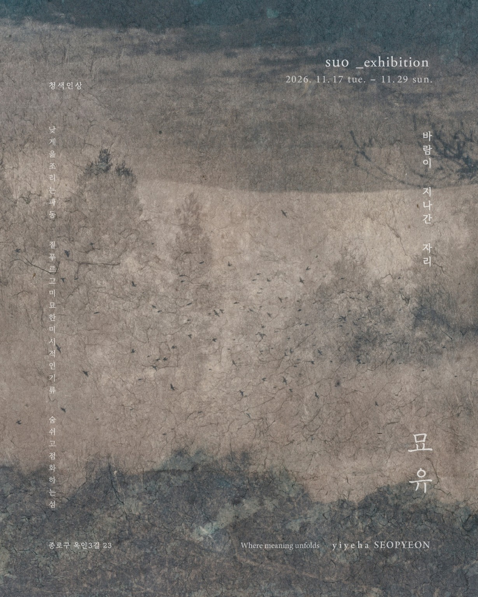
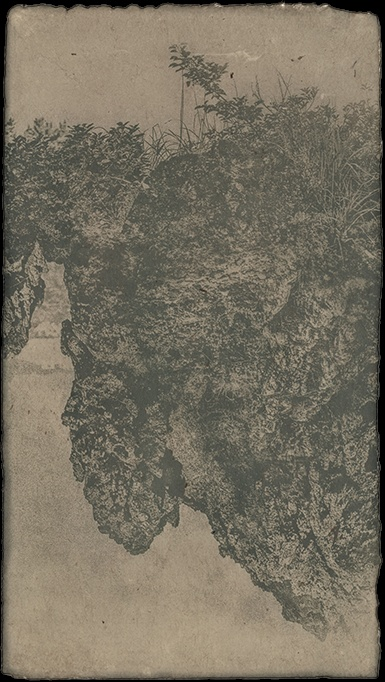
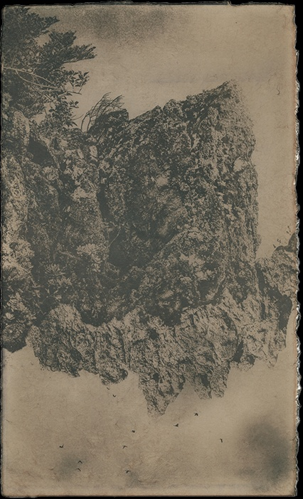

SUO — EXHIBITION / 2026
묘유
바람이 지나간 자리
2026. 11. 17 TUE. — 11. 29 SUN.
1 — 6 PM / 22, 23 CLOSED
1 — 6 PM / 22, 23 CLOSED

SCROLL TO EXPLORE ↓
THE EXHIBITION / 01
서로 다른 시간의 풍경이 포개져
하나의 섬이 된다.
이예하 서편은 수오 작가의 〈묘유〉와 함께 두 번째 문을 엽니다. 이 전시는 작가가 2022년 이후 처음 선보이는 개인전입니다.
작가는 2019년부터 보이는 것과 보이지 않는 것 사이를 살피며 시간이 쌓인 풍경의 이면을 바라봐 왔습니다. 이번 전시에서는 그렇게 마주한 섬의 속살을 ‘태’의 상으로 보여줍니다.
작업의 바탕이 되는 다중촬영에는 서로 다른 시간의 풍경이 겹쳐 있습니다. 자연광으로 노광한 청사진에 살림을 돌보며 얻은 자연물로 색을 입히고, 수분이 천천히 마르는 동안 짙푸른 빛이 남습니다. 돌과 오름의 형상이 포개져 둘이면서 하나인 덩어리를 이룹니다. 때로 씨앗처럼 보이는 이 덩어리에는 여러 가능성이 담겨 있습니다.
섬의 거센 바람과 미세한 기류 속에서 풍경은 계속 달라집니다. 서로 다른 때의 풍경이 한 화면에서 맞닿고, 그 마찰의 흔적이 표면에 남습니다. 그렇게 겹쳐진 풍경에는 섬의 어제와 오늘, 아직 오지 않은 내일이 함께 있습니다.
실마리를 엮는다는 뜻의 서편(緖編). 이번 전시 〈묘유〉에서는 수오 작가가 겹쳐 놓은 풍경을 실마리 삼아 섬의 시간을 들여다봅니다.
SUO — SOLO EXHIBITION / 2026
SELECTED IMAGES / 02
겹쳐진 풍경


“
풍경은 지나가지만,
그 시간이 남긴 표면은
오래도록 우리 곁에 머문다.
WHERE MEANING UNFOLDS
INFORMATION / 03
방문 안내
SUO — MYOYU
- EXHIBITION
- 수오 개인전 〈묘유〉
- DATE
- 2026. 11. 17 (화) — 11. 29 (일)
기간 중 11. 22, 23 휴무 - HOURS
- 오후 1시 — 6시
- VENUE
- 이예하 서편
서울 종로구 옥인3길 23